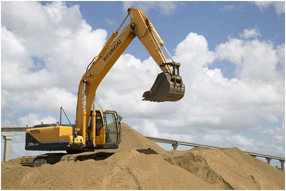

Need Assistance in Excavation?? We got you!
A common method of classification is by the material being excavated:
Topsoil excavation
This involves the removal of the exposed layer of the earth’s surface, including any vegetation or decaying matter which could make the soil compressible and therefore unsuitable for bearing structural loads. The depth will vary from site to site, but is usually in a range of 150-300 mm.
Earth excavation
This involves the removal of the layer of soil directly beneath the topsoil. The removed material (referred to as 'spoil') is often stockpiled and used to construct embankments and foundations.
Rock excavation
This is the removal of material that cannot be excavated without using special excavation methods such as drilling (by hand or with heavy machinery) or blasting with explosives.
Muck excavation
This is the removal of excessively wet material and soil that is unsuitable for stockpiling.
Unclassified excavation
This is the removal of a combination of the above materials, such as where it is difficult to distinguish between the materials encountered.
Excavation purpose
Excavation can also be classified according to the purpose of the work:
Cut and fill excavation
This is the process of excavation whereby the material that is cut or stripped. The removed topsoil and earth can be used as fill for embankments, elevated sections, and so on. It can also be used to form a level surface on which to build, as elevated sections of the site are ‘cut’ and moved to ‘fill’ lower sections of the site.
Trench excavation
A trench is an excavation in which the length greatly exceeds the depth. Shallow trenches are usually considered to be less than 6 m deep, and deep trenches greater than 6 m.
Trench, or footing, excavation is typically used to form strip foundations, buried services, and so on. The choice of technique and plant for excavating, supporting and backfilling the trench depends on factors such as; the purpose of the trench, the ground conditions, the trench location, the number of obstructions, and so on.

The common techniques that are used include:
Full depth, full length: Suitable for long narrow trenches of shallow depth, such as pipelines and sewers.
Full depth, successive stages: Suitable for deep trenches where works can progress in sequence, reducing the risk of collapse.
Stage depth, successive stages: Suitable for very deep trenches in confined areas, deep foundations and underpinning.
Basement excavation
A basement is part of a building that is either partially or completely below ground level. For more information, see Basement excavation.
Road excavation
This typically involves stripping topsoil and cut-and-fill. For more information, see Road construction.
Bridge excavation
This typically involves the removal of material for the footing and abutments of bridges. The work may be subdivided into wet, dry and rock excavation. Underwater excavations may require special methods of drill and blast. For more information, see Bridge construction.
Dredging
Dredging is the process of excavating and removing sediments and debris from below water level, typically from the bottom of lakes, rivers, harbours, and so on. For more information, see Dredging.
Over excavation
Excavation that goes beyond the depth which is required for the formation of a below ground structure due to the presence of unsuitable material that must be removed.